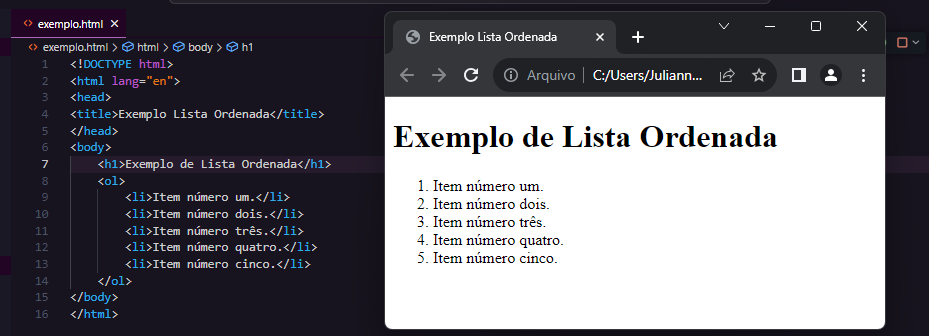
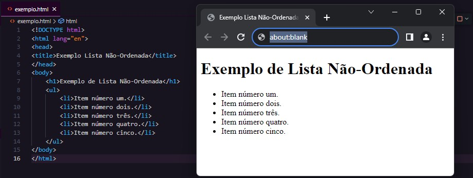

No contexto do desenvolvimento web, listas ordenadas e não ordenadas em HTML desempenham um papel importante na organização e apresentação de informações.
Este trabalho explora brevemente o uso e implementação dessas listas, focando em como elas contribuem para a construção eficiente de conteúdo web.
Uma lista ordenada é uma estrutura organizada de informações por números (1,2,3,4).
Elas apresentam uma sequência lógica, onde é destacado itens ou etapas de uma maneira mais fácil de aprender.
No HTML, elas são criadas usando a tag "< ol > < / ol >" e cada item da lista é definido pela tag "< li >< /li >", conforme pode ser verificado a seguir:
Ao contrário das listas ordenadas, as listas não ordenadas não possuem números ou letras associadas a cada item.
Em vez disso, os itens geralmente possuem marcadores, como pontos ou círculos.
Elas são criadas usando a tag "< ul > < / ul >" e cada item da lista é definido pela tag "< li >< /li >", igual as ordenadas. Segue um exemplo abaixo:
No link abaixo, constam as referências usadas para a criação desse site.
Clique aqui